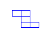

표생성 드랍다운 버튼을 선택하시면 테이블 행X열을 선택하는 창이 나타나며 마우스로 원하는 행열의 위치로
이동 후 선택하면 편집창에 테이블이 생성됩니다.
이동 후 선택하면 편집창에 테이블이 생성됩니다.

| 크기설정 |
너비와 높이를 설정하여 선택한 테이블의 전체 크기를 설정합니다. |
| 레이아웃 |
테이블이 놓여질 위치를 설정합니다 테이블을 포함하고 있는 부모객체에 상대적으로 놓여질 위치를 설정하며, 셀안의 내용이 정렬될 위치는 셀속성의 가로/세로 정렬에서 설정합니다. |
| 테두리적용설정 | 표 속성 세부(1) 참조 |
| 테두리 설정 | 표 속성 세부(2) 참조 |
| 배경색 |
우측의 색상버튼을 선택 후 적용하고자 하는 색상을 선택하면 테이블의 배경색이 적용됩니다. 셀 안의 배경색이 따로 지정된 경우 셀 배경색이 우선 표시됩니다. |
| 셀 간격/여백 | 표 속성 세부(3) 참조 |
| 미리보기 |
표 속성을 변경하는 경우 설정된 값으로 보여지게 될 테이블 형태를 적용이전에 미리보기를 지원합니다. |
| 테두리 합치기 |
테이블 외부 테두리선과 셀 테두리의 색을 겹쳐 보이도록 할 것인지의 여부를 결정합니다.
|
||||||||||||||||||
| 셀 동시 적용 |
테이블 테두리선과 셀 테두리에 선택된 테두리 속성을 동시에 적용할 지의 여부를 결정합니다.
|
||||||||||||||||||
| 개별적용 여부 |
테이블 테두리선의 Left, Top, Right, Bottom 개별 여부 적용를 설정합니다. 개별 적용이 선택된 경우 각각의 테두리 형태, 크기, 색상을 설정할 수 있습니다. |
||||||||||||||||
| 형태/크기 |
테이블 테두리선 형태와 크기를 설정합니다. double형 또는 3D 형태의 테두리인 경우 크기가 3 이상이여야 차이점이 표시됩니다.
|
||||||||||||||||
| 테두리색 | 테이블 테두리에 대한 색상을 지정합니다. |
| 셀 간격 |
|
||||||||||
| 셀 여백 | 셀 안의 내용이 테두리로부터 떨어져 보여질 간격을 설정합니다. |
| 셀 선택 |
셀 속성창 생성 이전에 테이블의 선택된 셀의 정보가 표시됩니다. 선택된 셀을 클릭하면 선택 또는 선택해제가 되며, 다른 셀도 동일한 방법으로 선택할 수 있습니다. 테이블의 미리보기와 동일하게 셀 속성의 정보를 수정시 적용이전에 미리보기를 지원합니다. |
| 테이블 테두리 적용 여부 |
각각의 셀 별로 테두리 형태, 크기, 색상 및 배경색을 지정하는 경우 테이블 속성에 영향을 받는 부분이 발생되며, 이런 경우 테이블 속성을 제거하여 셀 속성을 지정할 수 있습니다. (테이블 속성에서의 동일한 설정은 테두리 합치기 - 해제, 크기 - 0, 색상 - 제거 로 설정한 것과 동일) |
| 셀 배경색 |
우측의 색상버튼을 선택 후 적용하고자 하는 색상을 선택하면 셀의 배경색이 적용됩니다. 셀 안의 배경색 설정이 없는 경우 테이블 배경색이 표시됩니다. |
| 셀 테두리 설정 | 셀 속성 세부(1) 참조 |
| 테두리 형태 |
셀의 테두리 형태를 설정 (테이블 테두리 형태와 동일한 형태 - 표 속성 세부(2) 참조) |
| 테두리 크기 |
셀의 테두리 크기를 설정 (테이블 테두리 크기와 동일한 형태 - 표 속성 세부(2) 참조) |
| 테두리색 |
셀의 테두리에 적용될 색상을 선택 |
| 테두리 선택 |
테두리의 형태, 크기, 색상를 선택하신 후 테두리 선택의 상,하,좌,우의 각 화살표를 선택하시면 테두리의 표시 여부가 설정됩니다. |
| 셀 테두리 적용 예 | ||||
 |
 |
 |  |
|
| 셀 선택 |
셀 속성창 생성 이전에 테이블의 선택된 셀의 정보가 표시됩니다. 선택된 셀을 클릭하면 선택 또는 선택해제가 되며, 다른 셀도 동일한 방법으로 선택할 수 있습니다. |
| 셀 크기설정 |
선택된 셀에 대한 너비, 높이를 설정합니다. 별도의 설정이 없는 경우 셀 크기를 설정하지 않으며, 너비만 따로 또는 높이만 따로 설정할 수 있습니다. |
| 셀 레이아웃 |
선택된 셀에 대한 가로와 세로의 정렬을 설정합니다. (가로 - 왼쪽, 가운데, 오른쪽 세로 - 위쪽, 가운데, 아래쪽) |